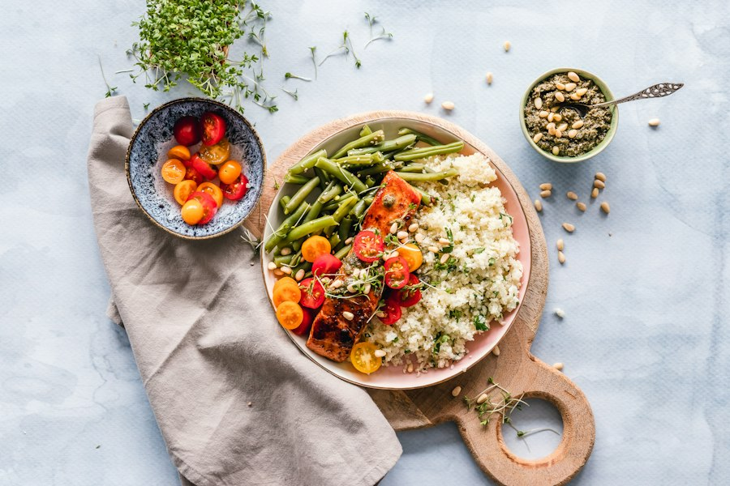

Gratin de potimarron rôti, noisettes & châtaignes
« Dobby règle la vitesse des couteaux et la chaleur du bol inox pour que vos préparations mijotent avec la même perfection qu'au chaudron ! » — Note technique de Dobby
Avertissement de Vérification Manuelle
Les indications ci-dessous sont des consignes certifiées et enregistrées manuellement par la maisonnée pour le modèle Thermomix TM5. Vérifiez toujours la consistance et ne dépassez jamais la capacité maximale du bol (2,2 litres max). Adaptez les vitesses selon la délicatesse des morceaux. Aucun réglage n'est généré automatiquement par une IA.
Rituel des Étapes TM5
Préparation & Éminçage
Déposer les gousses d'ail et échalotes dans le bol. Mixer 5 sec à vitesse 5. Racler les parois du bol avec la spatule souple.
Rissolage & Fondue douce
Ajouter 2 c. à soupe d'huile d'olive de terroir. Faire suer 4 min à 100°C, Sens Inverse, Vitesse 1 sans le gobelet doseur pour laisser s'échapper l'humidité aromatique.
Cuisson vapeur des dés
Insérer les cubes de potimarron avec un fond d'eau ou bouillon végétal (100 ml). Cuire 12 min à température Varoma en Sens Inverse vitesse mijotage pour attendrir la chair tout en conservant des arêtes nettes.
Liaison crème & châtaignes
Ajouter la crème d'Isigny, la muscade fraîchement râpée et les brisures de châtaignes. Mélanger délicatement 2 min à 80°C en Sens Inverse Vitesse 1. Transvaser ensuite dans le plat à gratin en terre cuite pour la dorure au four.
Ustensiles & Équipement TM5
- Vérifié
- Affûté
- Étape 4
- Optionnel
- Requis
Règle d'or de sécurité vapeur : Ne jamais verrouiller hermétiquement le couvercle avec le gobelet doseur lors de cuissons dépassant 100°C ou Varoma. Poser le panier de cuisson sur le couvercle pour contenir les projections tout en libérant la pression.